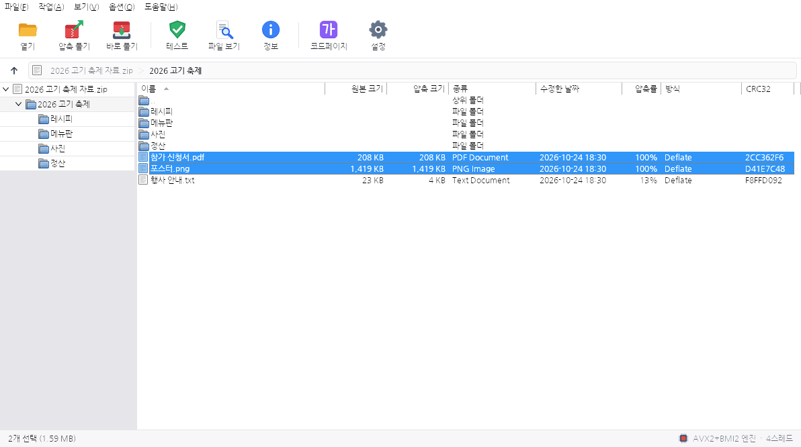
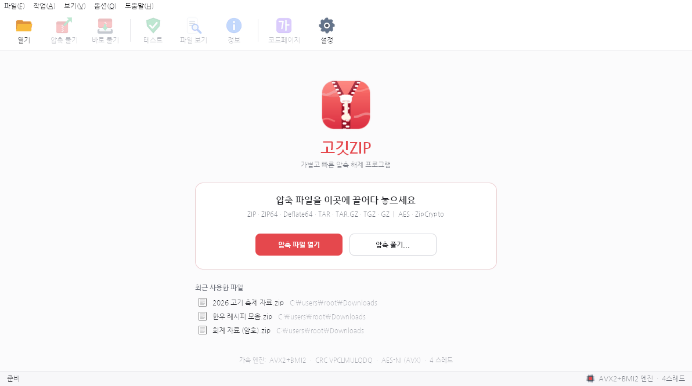

CP949와 UTF-8 자동 감지
╣«╝¡/║╕░φ╝¡.txt문서/보고서.txt
UTF-8 표시가 없어도 이름이 올바른 UTF-8인지 검사해서, 아니면 시스템의 한국어 코드페이지로 읽습니다.
압축 해제 프로그램 · Windows 2000 – 11
고깃ZIP은 C로 쓰고 Win32 API만 부르는 400KB짜리 압축 해제 프로그램입니다. 실행할 때마다 CPU가 지원하는 명령어를 확인해서, 윈도우 7 이상에서는 AVX2로, 더 오래된 PC에서는 SSE와 MMX로 가장 빠른 길을 고릅니다.
설치 없이 실행 파일 하나로 동작합니다. 32비트판은 Windows 2000에서도 실행됩니다.

압축 파일을 열면 반디집처럼 폴더 트리와 파일 목록이 나뉘어 보입니다. 상태 표시줄 오른쪽에는 지금 쓰고 있는 가속 엔진이 나옵니다.
가속 엔진 등급표
같은 실행 파일 안에 명령어 세트별로 컴파일한 압축 해제 엔진이 일곱 벌 들어 있습니다. 시작할 때 CPUID와 운영체제의 레지스터 저장 상태(XGETBV)를 보고 쓸 수 있는 가장 높은 등급을 씁니다. 설정에서 낮은 등급을 직접 고를 수도 있습니다.
| 등급 | 엔진 | 쓰는 명령어 | 필요한 Windows | Deflate 해제 | CRC32 검사 |
|---|---|---|---|---|---|
| 1++ | AVX2 | AVX2 32바이트 복사, BMI2 비트 추출, VPCLMULQDQ | 7 SP1 이상 | ||
| 1+ | AVX | VEX 인코딩 32바이트 복사, PCLMULQDQ | 7 SP1 이상 | ||
| 1 | SSE4.1 | PCLMULQDQ CRC 폴딩, AES-NI | 2000 이상 | ||
| 2 | SSE2 | 16바이트 정수 복사 | 2000 이상 | ||
| 3 | SSE | 16바이트 복사 (Pentium III) | 2000 이상 | ||
| 3 | MMX | 8바이트 복사 (Pentium MMX · II) | 2000 이상 | ||
| 3 | x86 | i586 정수 명령만 (Pentium) | 2000 이상 |
측정값은 프로그램에 들어 있는 벤치마크(옵션 → CPU 가속 벤치마크)로 잰 것입니다. Intel Xeon 2.1GHz, 32비트 빌드, 스레드 1개 기준이며 압축 해제는 프로그램 아이콘 데이터를, CRC32는 4MB 버퍼를 반복 처리했습니다. 막대 길이는 각 열의 최댓값을 100으로 놓은 비율입니다. 실제 압축 해제는 여러 파일을 CPU 코어 수만큼 동시에 풀기 때문에 이보다 빠릅니다.
한글 파일 이름
한국 윈도우에서 만든 ZIP은 CP949로, 맥과 리눅스에서 만든 ZIP은 UTF-8로 이름을 저장합니다. 고깃ZIP은 파일마다 어느 쪽인지 확인하고, 맥에서 풀어 쓴 자모도 다시 붙여 줍니다.
UTF-8 표시가 없어도 이름이 올바른 UTF-8인지 검사해서, 아니면 시스템의 한국어 코드페이지로 읽습니다.
macOS가 저장하는 NFD 자모(ᄒ+ᅡ+ᆫ)를 한 글자로 합쳐서 탐색기에서 정상적으로 보이게 합니다.
그래도 이상하게 보이면 도구 모음의 ‘코드페이지’ 단추로 9가지 인코딩 중 하나를 골라 바로 다시 읽을 수 있습니다.
지원 윈도우
32비트 실행 파일은 Windows 2000(NT 5.0)용 PE 헤더로 만들고 그때부터 있던 API만 직접 연결합니다. 새 윈도우에만 있는 기능(새 폴더 선택 창, 작업 표시줄 진행률, 탐색기 테마)은 실행 중에 있을 때만 불러 씁니다.
칸 아래의 표시는 그 윈도우에서 쓸 수 있는 가장 높은 엔진입니다. AVX와 AVX2는 운영체제가 YMM 레지스터를 저장해 줘야 쓸 수 있는데, 윈도우는 7 서비스 팩 1부터 이를 지원합니다. 실제로 쓰는 엔진은 CPU에 따라 정해지므로, 예전 PC라면 같은 윈도우 11에서도 SSE2나 MMX 엔진으로 동작합니다.
형식과 안전
화면 둘러보기

탐색기 메뉴와 명령줄
설정에서 탐색기 메뉴를 켜면 ZIP·TAR·GZ 파일의 오른쪽 클릭 메뉴에 ‘고깃ZIP’이 생깁니다. 윈도우 7 이상에서는 하위 메뉴로, XP와 비스타에서는 바로 보이는 항목으로 등록하며 관리자 권한은 필요 없습니다.
GogitZip.exe 자료.zip : 압축 파일 열기 GogitZip.exe /smart 자료.zip : '자료' 폴더를 만들어 풀기 (최상위 폴더가 하나면 생략) GogitZip.exe /here 자료.zip : 압축 파일이 있는 곳에 풀기 GogitZip.exe /to D:\받은파일 자료.zip : 지정한 폴더에 풀기 GogitZip.exe /extract 자료.zip : 압축 풀기 옵션 창 열기 GogitZip.exe /test 자료.zip : 압축 파일 검사 GogitZip.exe /register [/assoc] : 탐색기 메뉴 등록 (연결 프로그램 포함) GogitZip.exe /bench : CPU 가속 벤치마크
내려받기
두 판 모두 같은 기능을 가진 단일 실행 파일입니다. 아무 폴더에나 두고 실행하면 됩니다.
자주 묻는 질문
프로젝트 이름이 Butcherar(정육점 + 아카이버)입니다. 정육점에서 고기를 결대로 썰어 내듯 압축 파일을 빠르게 풀어 낸다는 뜻으로 지었습니다. 로고의 지퍼 손잡이는 뼈다귀 모양입니다.
1.0은 압축 해제 전용입니다. 대신 푸는 쪽에 집중해서 ZIP, ZIP64, Deflate64, AES 암호, TAR, GZ를 지원합니다.
32비트판은 PE 헤더의 운영체제 버전이 5.0이고, kernel32·user32·gdi32 등에서 윈도우 2000에 있던 함수만 직접 가져옵니다. C 런타임(msvcrt)도 쓰지 않습니다. 비스타 이후에만 있는 기능은 실행 중에 있을 때만 불러옵니다.
AVX 레지스터는 운영체제가 작업 전환 때 저장해 줘야 안전하게 쓸 수 있습니다. 윈도우 7 SP1 이전에는 이 기능이 없어서, 고깃ZIP은 XGETBV로 이를 확인하고 PCLMULQDQ와 AES-NI까지 쓰는 SSE4.1 엔진으로 동작합니다.
현재 사용자 레지스트리 HKCU\Software\GogitZIP에 저장합니다. 탐색기 메뉴도 HKCU에만 등록하므로 관리자 권한이 필요 없고, 설정 창에서 끄면 깨끗하게 지워집니다.